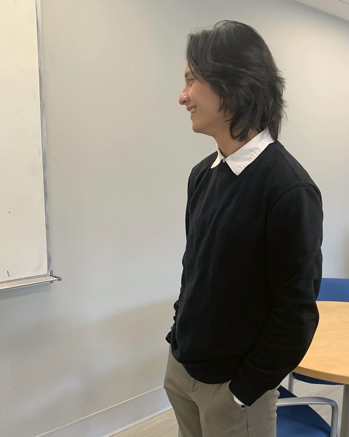

Teaching

During the Fall 2026 and Spring 2027 semesters, I am an instructor of record for MATH 1131Q (Single Variable Calculus) through UConn's Mathematics Teaching Innovation Fellowship.
Click on the links below to view my course webpages and teaching material.
For instructors: slides, homework, and other materials from my courses are collected on the Instructor Resources page.
Currently Teaching
- Fall 2026. MATH 1131Q: Calculus I (Instructor).
Previous Courses
- Summer 2026. MATH 1070Q: Mathematics for Business and Economics (Instructor).
- Spring 2026. MATH 1020Q: Introduction to Problem Solving. (Instructor).
- Fall 2025. MATH 1020Q: Introduction to Problem Solving. (Instructor).
- Spring 2025. MATH 1020Q: Introduction to Problem Solving. (Instructor).
- Fall 2024. MATH 2110Q: Calculus III. (Teaching Assistant).
- Spring 2024. MATH 1132Q: Calculus II. (Teaching Assistant).
- Fall 2023. MATH 1131Q: Calculus I. (Teaching Assistant).
Directed Reading Program
Through UConn's Directed Reading Program (DRP), I mentor undergraduates in semester-long independent study projects on topics beyond the standard undergraduate curriculum. Each student and I meet weekly to discuss readings and work through exercises. The semester ends with the student giving an accessible 15-20 minute presentation on their project.
- Fall 2026. Differential Geometry of Curves and Surfaces.
With Bruno Cordova Apolony.
- Spring 2026. Homological Algebra and De Rham Theory.
With Brett Newman. (Presentation).
- Fall 2024. Singular Homology with Applications to Biology.
With Douglas Sullivan.